|
AFAT |
: Agriculture, Foresterie et Autres Affectations des Terres |
|
ANAM |
: Agence Nationale de la Météorologie |
|
BAU |
: Business As Usual |
|
BNDT |
: Base Nationale de Données Topographiques |
|
CAEP |
: Climate Action Enhancement Package |
|
CCNUCC |
: Convention-Cadre des Nations Unies sur les Changements Climatiques |
|
CDN |
: Contribution Déterminée au niveau National |
|
CET |
: Centre d’Enfouissement Technique |
|
CIVD |
: Centre Intégré de Valorisation des Déchets |
|
CN |
: Communication Nationale |
|
CO2eq |
: Équivalent en dioxyde de carbone (Équivalent CO2) |
|
CPDN |
: Contribution Prévue Déterminée au niveau National |
|
DGESS |
: Directions Générales des Études et des Statistiques Sectorielles |
|
EX-ACT |
: EX-Ante Carbon-balance Tool |
|
FAARF |
: Fonds d’Appui aux Activités Rémunératrices des Femmes |
|
FAO |
: Organisation des Nations Unies pour l’Alimentation et l’Agriculture |
|
FIE |
: Fonds d’Intervention pour l’Environnement |
|
GACMO |
: Greenhouse Gas Abatement Cost Model |
|
GES |
: Gaz à Effet de Serre |
|
Gg |
: Giga Gramme |
|
GGGI |
: Global Green Growth Institute |
|
GIEC |
: Groupe d’experts Intergouvernemental sur l’Évolution du Climat |
|
IDH |
: Indice de Développement Humain |
|
IGB |
: Institut Géographique du Burkina |
|
IPCC |
: Intergouvernemental Panel on Climate Change |
|
MEEVCC |
: Ministère de l’Environnement, de l’Économie Verte et du Changement Climatique |
|
MRV |
: Mesure, Rapportage, Vérification |
|
MW |
: Mégawatt |
|
MWc |
: Mégawatt-crête |
|
NAMAs |
: Nationally Appropriate Mitigation Actions |
|
ODD |
: Objectifs de Développement Durable |
|
ONG |
: Organisation Non Gouvernementale |
|
PANA |
: Programme d’Action National d’Adaptation à la variabilité et aux changements climatiques |
|
PIB |
: Produit Intérieur Brut |
|
PIUP |
: Procédés Industriels et Utilisation des Produits |
|
PMA |
: Pays les Moins Avancés |
|
PNA |
: Plan National d’Adaptation aux changements climatiques |
|
PNUD |
: Programme des Nations Unies pour le Développement |
|
PNUE |
: Programme des Nations Unies pour l’Environnement |
|
RCM |
: Regional Climate Model |
|
RGPH |
: Recensement Général de la population et de l’Habitation |
|
SP/CNDD |
: Secrétariat Permanent du Conseil National pour le Développement Durable |
|
SP/CONEDD |
: Secrétariat Permanent du Conseil National pour l’Environnement et le Développement Durable |
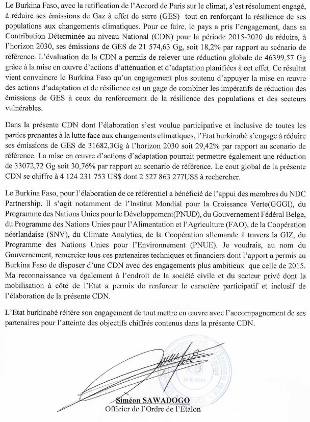
Le Burkina Faso, très vulnérable aux effets des changements climatiques, a fait l’option de contribuer à l’effort mondial de stabilisation des concentrations des Gaz à Effet de Serre (GES) dans l’atmosphère. Cet engagement s’est matérialisé par la ratification de la Convention-Cadre des Nations Unies sur les Changements Climatiques, le Protocole de Kyoto à ladite Convention et l’Accord de Paris sur le climat. Le pays a traduit son engagement pour la réduction des émissions de GES en soumettant sa Contribution Prévue Déterminée au niveau National (CPDN) le 23 octobre 2015 qui est devenue par la suite sa Contribution Déterminée au niveau National (CDN) à l’issue de sa ratification de l’Accord de Paris sur le climat. Cette première CDN a fixé des objectifs de réduction d’émissions de GES à l’horizon 2030 de 21 574,63 Gg CO2eq, soit 18,2% par rapport au scénario de référence (Business As Usual ) pour les actions d’atténuation et de 43 707 Gg CO2eq, soit 36,95 % à travers la mise en œuvre d’actions d’adaptation. Pour la période 2015Ŕ2020, le Burkina Faso prévoyait une réduction de 5133 Gg CO2eq représentant 5,58% en scénario inconditionnel et 10953 Gg CO2eq soit 11,9% en scénario conditionnel pour les actions d’atténuation.
L’évaluation de la CDN en 2020 montre une réduction de 4 858,07 Gg CO2eq, soit 5,3% du scénario inconditionnel et 2 643,5 Gg CO2eq, soit 2,9% du scénario conditionnel. Le niveau d’atteinte de l’engagement pour la période 2015Ŕ2020 est de 91,37% pour le scénario inconditionnel et 24,36% pour le scénario conditionnel. En ce qui concerne les actions d’adaptation, l’engagement du pays en termes de réduction de GES qui se chiffrait à 43 707Gg CO2eq en 2030, a pu atteindre un niveau de réalisation de 89% en 2020 soit une réduction de 38 898 Gg CO2eq de GES. Le Burkina Faso, grâce à la mise en œuvre des actions d’adaptation, a pu remplir ses engagements de réduction de ses émissions de GES à l’horizon 2025. Cette situation convainc davantage le pays que le financement de ses actions d’adaptation est source de réduction des émissions de gaz à effet de serre. Le faible niveau d’atteinte du scénario conditionnel s’explique par les difficultés rencontrées dans la mobilisation des ressources.
L’accord de Paris sur le climat prévoit en son article 4 une révision à la hausse des ambitions de réduction des Parties tous les cinq ans. Pour répondre à cette exigence, le pays a entamé le processus de révision de sa CDN en fin 2019. Cette révision conduite par le Secrétariat Permanent du Conseil National pour le Développement Durable (SP/CNDD) a été rendue possible grâce à l’accompagnement du NDC Partnership et ses partenaires que sont le Programme des Nations Unies pour le Développement (PNUD), l’Institut Mondial pour la Croissance Verte (GGGI), l’Organisation Néerlandaise de Développement (SNV), la Coopération Allemande (GIZ), le Climate Analytics, l’Organisation des Nations Unies pour l’Alimentation et l’Agriculture (FAO) et le Programme des Nations Unies pour l’Environnement (PNUE) . Le Burkina Faso a, par ailleurs, adopté une approche participative et inclusive pour la révision de sa CDN à travers l’implication des acteurs du public, du privé, des ONG et associations, aux niveaux central, déconcentré et décentralisé.
Après l’évaluation de sa première CDN qui lui a permis d’identifier les forces et les faiblesses, le pays a mené plusieurs activités en vue de rendre sa nouvelle CDN plus
ambitieuse, réaliste, mesurable, notifiable et vérifiable. On peut citer entre autres (i) l’évaluation du potentiel de séquestration des GES des secteurs de la CDN; (ii) l’estimation des coûts et les bénéfices des différentes actions d’adaptation et d’atténuation envisagées dans la nouvelle CDN ; (iii) la définition des cibles et indicateurs des actions retenues pour la CDN ; (iv) l’alignement des mesures d'adaptation et d'atténuation aux ODD prioritaires du pays ; (v) la prise en compte du genre et des solutions fondées sur la nature dans la CDN ; (vi) l’élaboration de Plans sectoriels de la CDN genre sensibles.
Le Burkina Faso, au titre de ses nouvelles ambitions, a considéré un scenario inconditionnel et un scenario conditionnel. Le pays s’engage, en rapport avec ses actions d’atténuation, à réduire ses émissions de GES de 31682,3 Gg CO2eq à l’horizon 2030 soit 29,42% par rapport au scenario Business As Usual. Cet engagement est de 21074,94 Gg CO2eq pour le scenario inconditionnel soit 19,60% et de 10557,91 Gg CO2eq pour le scenario conditionnel soit 9,82%. Comparativement à la CDN de 2015 qui était de 18,2%, l’Etat burkinabè a rehaussé ses ambitions de 11,22%. Pour atteindre cet objectif de 29,42%, un montant de 449 118 465,3 US$ est prévu au titre du scenario inconditionnel contre un montant de 885 670 522 US$ attendu pour le scenario conditionnel soit un montant total de 1 334 788 987 US$.
Par ailleurs, le pays a pris l’option de renforcer son adaptation et sa résilience par la mise en œuvre d’actions dont le potentiel de réduction des émissions de GES est estimé à 33072,72 Gg CO2eq soit 30,76% par rapport au scenario Business As Usual. Ce potentiel est réparti en scenario inconditionnel (20.67%) et en scenario conditionnel (10.08%). La mise en œuvre des actions du scenario inconditionnel est d’un montant de 1 147 250 011 US$ contre 1 640 812 864 $US pour le scenario conditionnel soit un montant total de 2 788 062 875 US$.
L’évaluation des besoins financiers pour la mise en œuvre de la CDN s’élève à 4 124 231 753 US$ dont 1 596 368 476 US$ déjà acquis et 2 527 863 277 US$ à rechercher. Les actions spécifiques au genre et comprises dans le montant à rechercher est d’un montant de 1 379 891 US$.
Le Burkina Faso est un pays sahélien de l’Afrique de l’Ouest. Il est situé entre 9°20’ et 15°05’ de latitude Nord, 5°20’ de longitude Ouest et 2°03’de longitude Est et couvre une superficie de 273 187 Km2 (BNDT/IGB, 2012). Sa population est évaluée à 20 487 979 habitants, avec une densité moyenne de 74 habitants au km², selon le Recensement General de la Population et de l’Habitation (RGPH) de 2019. Le milieu rural abrite 73,7% de la population nationale, qui vit essentiellement de l’exploitation des ressources naturelles. Le taux de croissance du PIB est en moyenne de 6,2% par an entre 2016 et 2019 et l’incidence de la pauvreté´ a connu une certaine baisse, passant de 40,1% en 2014 à 36,2% en 2018 selon le deuxième Plan National de Développement Economique et Social (PNDES II). Le climat est de type soudanien, avec une pluviométrie, très variable et irrégulière qui décroît du Sud-Ouest vers le Nord, alternant une saison sèche longue (octobre à mai) et une saison pluvieuse courte (juin à septembre). La température est également très variable en fonction des saisons de l’année, avec de fortes amplitudes diurnes. Ces perturbations climatiques ont pour conséquences une migration des isohyètes et des isothermes. La température annuelle moyenne connaît une tendance à la hausse sur la période 1961-2018 sur l’ensemble des stations synoptiques du pays et les isohyètes 600 et 900 mm ont considérablement migré (figure 1).
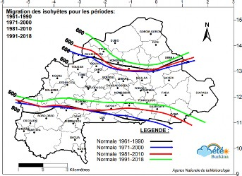
Source : Agence Nationale de la Météorologie
Les risques climatiques projetés indiquent que pour le Burkina Faso, la variabilité et les changements climatiques auront des répercussions négatives importantes et certaines, sur les secteurs socio-économiques clés de développement, tels que l’agriculture, l’élevage, la pêche, l’exploitation des produits forestiers, etc. Dans ce contexte de vulnérabilité climatique, l’atteinte des Objectifs de Développement Durable (ODD) du pays pourrait être fortement compromise avec une incidence sur les inégalités de genre, du fait de l’économie nationale qui repose essentiellement sur le secteur primaire.
Les émissions nationales de GES, au Burkina Faso, ont une tendance à la hausse entre 1995 et 2015. En effet, les émissions sont passées de 36 648 Gg CO2eq en 1995 à plus de 66 000 Gg CO2eq en 2015, soit une augmentation de 80 %.
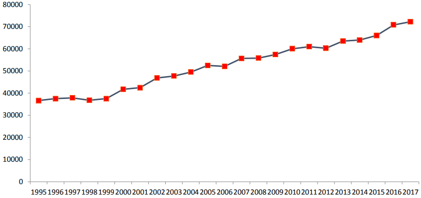
Source : Inventaire national GES, 2021
La hausse des émissions nationales de GES est observée dans tous les secteurs concernés par l’inventaire national des émissions de GES. Les émissions du secteur Agriculture Foresterie et Autres utilisation des Terres (AFAT) ont augmenté de 69%, celles des secteurs de l’Énergie de 8%, des Déchets 2% et des Procédés Industriels et Utilisation des Produits chimiques (PIUP) 1%.
|
Secteurs |
1995 |
2015 |
Progression (%) |
Taux annuel (%) |
Projection 2025 |
Projection 2030 |
Projection 2050 |
|
Énergie |
1 115,45 |
4 035,42 |
262 |
6 |
7 226,82 |
10 110,53 |
31 016,58 |
|
Procédés industriels |
9,04 |
404,64 |
4378% |
2 |
2 505,42 |
6 114,89 |
239 007,99 |
|
Agriculture, foresterie et autres utilisations des terres (AFAT) |
34 645,86 |
59 832,82 |
73 |
3 |
80 410,31 |
88 395,68 |
168 361,32 |
|
Déchets |
877,18 |
1 762,63 |
101 |
3 |
2 368,83 |
2 901,61 |
4 959,79 |
|
National |
36 647,52 |
66 035,51 |
80 |
3 |
92 511,38 |
107 522,71 |
185814,84 |
Source : Inventaire national GES, 2021 adapté.
Les augmentations des émissions s’expliquent entre autres par l’accroissement des superficies agricoles, la diminution des terres forestières et l’augmentation des effectifs du cheptel.
Sur la période 1995 à 2015, la contribution du secteur AFAT aux émissions nationales de GES est d’au moins 90%.
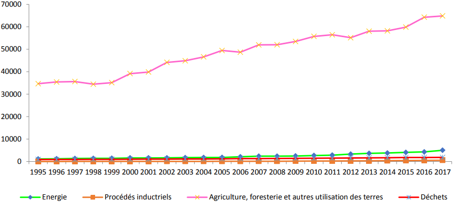
Figure 3 : Évolution des émissions nationales de GES des secteurs de 1995 à 2017.
Source : Inventaire national GES, 2021
En faisant une analyse par secteur d’émissions de GES, le secteur AFAT a émis 34 645,86 Gg CO2eq en 1995 et 59 832,82 Gg CO2eq en 2015, soit une augmentation de 73%. Si cette tendance se maintient, ce secteur, en 2030, émettra 88 395,68 Gg CO2eq et 168 361,32 Gg CO2eq en 2050.
S’agissant du secteur de l’Énergie, les émissions de GES sont passées de 1 115,45 Gg CO2eq en 1995, à 4 035,42 Gg CO2eq en 2015. En maintenant le rythme de progression de 2,62, en 2030, ce secteur émettra 10 110,53 Gg CO2eq et 31 016,58 Gg CO2eq en 2050.
Pour ce qui est du secteur des Déchets, les émissions sont passées de 877,18 Gg CO2eq en 1995 à 1 763,63 Gg CO2eq en 2015 représentant une progression de 1,01. A ce rythme, ce secteur émettra 2 901,61 Gg CO2eq en 2030 et en 2050, une quantité d’émissions de 4 959,79 Gg CO2eq.
En ce qui concerne le secteur des PIUP, bien que les émissions de GES soient faibles, il enregistre un fort taux de progression à hauteur de 4 378% passant de 9,04 Gg CO2eq en 1995 à 404,64 Gg CO2eq en 2015. En suivant cette tendance, le secteur des PIUP émettra 6 115 Gg CO2eq en 2030 et en 2050 une quantité d’émissions de 239 007,99 Gg CO2eq.
En 1995, les principaux secteurs émetteurs des GES étaient, le secteur de l’agriculture, la foresterie et les autres utilisations des terres (94,5%), le secteur de l’énergie (3,0%), celui des déchets (2,4%) et enfin le secteur des procédés industriels avec moins de 0,1% du total des émissions.
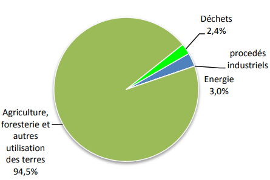
Source : Inventaire national GES, 2021
Dans une analyse globale, on note qu’en 2015, le poids du secteur AFAT (90,6%) dans le total des émissions nationales de GES a légèrement diminué. Par contre les secteurs de l’énergie (6,1 %) et des procédés industriels (0,6%) ont augmenté. Les émissions de GES à
travers le secteur des déchets sont restées quasi stables (2,7%). Les émissions totales nationales de GES pourraient atteindre 107 522,71 Gg CO2eq en 2030 et 443 345,59 Gg CO2eq en 2050. L’augmentation enregistrée des émissions de GES dans les deux secteurs (énergie et procédés industriels) se justifie par l’industrialisation en marche du pays et l’augmentation du parc automobile.
Parmi les GES émis au Burkina Faso, le CO2 qui représentait 62% en 1995 est passé à 66% en 2015. Quant au CH4, sa contribution aux émissions est passée de 21% en 1995 à 20% en 2015. Les émissions du N2O ont diminué entre 1995 (17,02%) et 2015 (14%). Enfin, les HFCs contribuent à moins de 1% des GES.
Dans sa première CDN, le Burkina Faso a fixé ses objectifs de réduction de GES de 21 574,63 Gg CO2eq à l’horizon 2030, soit 18,2% par rapport au scenario Business As Usual pour les actions d’atténuation et de 43 707 Gg CO2eq, soit 36,95 % à travers la mise en œuvre des actions d’adaptation. Pour la période 2015Ŕ2020, le Burkina Faso prévoyait une réduction de 5,58% en scénario inconditionnel et 11,9% en scénario conditionnel pour les actions d’atténuation.
L’évaluation de la CDN en 2020 montre une réduction de 4 858,07 Gg CO2eq, soit 5,3% du scénario inconditionnel et 2 643,5 Gg CO2eq, soit 2,9% du scénario conditionnel. Le niveau d’atteinte de l’engagement pour la période 2015Ŕ2020 est de 91,37% pour le scénario inconditionnel et 24,36% pour le scénario conditionnel. Le faible niveau d’atteinte du scénario conditionnel s’explique par les difficultés rencontrées pour la mobilisation des ressources. En ce qui concerne les actions d’adaptation l’engagement du pays en termes de réduction de GES qui se chiffrait à 43 707 Gg CO2eq en 2030, a pu atteindre un niveau de réalisation de 89% en 2020 soit une réduction de 38 898 Gg CO2eq de GES. En outre, l’évaluation a montré que la prise en compte du genre dans certains projets renseignés reste faible. Les femmes représentaient parfois entre 17 et 52% et les jeunes 22 et 27% des bénéficiaires.
La révision de la CDN du Burkina Faso, coordonnée par le SP/CNDD, a bénéficié du soutien technique et financier de l’initiative « Climate Action Enhancement Package (CAEP) » du NDC Partnership et du « Climate Promise » du PNUD. Plusieurs Partenaires Techniques et Financiers, membres du CAEP se sont mobilisés aux côtés du Gouvernement du Burkina Faso
dans le cadre de cette révision. Il s’agit notamment de la SNV, du PNUD, de GGGI, de la FAO, de la GIZ, du Climate Analytics et du PNUE.
Dans le souci de permettre au Burkina Faso de disposer d’une CDN plus ambitieuse, pertinente et réaliste, la démarche inclusive et participative a été adoptée pour l’implication de l’ensemble des acteurs du public, du privé, des ONG et associations, aux niveaux central, déconcentré et décentralisé. Une communication en conseil des ministres a été faite à cet effet.
Cette révision, faut-il le rappeler, tire son fondement de l’article 4 de l’Accord de Paris qui invite les Parties prenantes audit Accord à communiquer une nouvelle CDN, tous les cinq ans avec une ambition de réduction des émissions de GES à la hausse.
La première activité de cette révision a été l’évaluation qualitative et quantitative de la première CDN du Burkina Faso. Elle a permis d’identifier les forces et les faiblesses de cette CDN et de formuler des recommandations en vue d’améliorer la clarté, la transparence et la compréhension de la nouvelle CDN du Burkina Faso. Plusieurs activités ont été identifiées pour être inclues dans la nouvelle CDN et découlent des documents de politique, plan et stratégie, projets et programmes du pays.
La fixation des nouveaux engagements en matière d’atténuation et d’adaptation dans la nouvelle CDN a connu la réalisation de plusieurs activités. Il s’est agi des activités ci-après :
l’évaluation du potentiel d’atténuation des émissions de GES des secteurs de la CDN à l’aide des outils IPCC 2006 révisé, EX-ACT, GACMO ;
l’estimation des coûts et les bénéfices des différentes actions d’adaptation et d’atténuation, envisagées dans la nouvelle CDN pour des projets et programmes du secteur AFAT et du secteur énergie (d’autres projets n’ont cependant pas fait l’objet de cette évaluation mais les avantages socio-économiques liés à leur mise en œuvre ont été mis en exergue) ;
la définition des cibles et indicateurs des actions retenues pour la CDN ;
l’étude sur l’alignement des mesures d'adaptation et d'atténuation aux ODD prioritaires du Burkina Faso ;
l’étude sur la prise en compte des solutions fondées sur la nature dans la CDN ;
l’analyse genre dans les secteurs prioritaires de la CDN ;
l’élaboration de Plans sectoriels de la CDN genre sensibles ;
la production d’une CDN synthétique prenant en compte les différents livrables ;
la validation de la CDN en atelier national, son examen par la Commission Nationale de Planification du Développement, son adoption en conseil des Ministres et sa soumission au Secrétariat Exécutif de la CCNUCC ;
la capitalisation du processus de révision de la CDN.
le dioxyde de carbone (CO2) : il est le plus abondant des gaz à effet de serre et provient principalement de l’usage de combustibles fossiles, de certaines activités industrielles, de la déforestation et dégradation des forêts et de certaines pratiques agro-pastorales.
l’oxyde nitreux (N2O) : il provient de l’épandage d’engrais sur les sols dans le cadre des activités agricoles notamment. Il a un pouvoir de réchauffement de 310 fois plus élevé que le dioxyde de carbone.
le méthane (CH4) : il provient notamment de la fermentation entérique, de la digestion des ruminants, des décharges et du traitement des eaux usées. Il réchauffe 21 fois plus que le dioxyde de carbone.
les gaz fluorés : ces gaz sont utilisés comme agents réfrigérants, isolants électriques ou conducteurs de chaleur. Ce sont les Chlorofluorocarbures (CFC), les Hydrofluorocarbures (HFC), les Perfluorocarbures (PFC) et l’Hexafluorure de Soufre (SF6). Les HFCs sont les gaz à effet de serre industriels considérés dans les inventaires nationaux de GES au Burkina Faso. Ils sont 1300 fois plus réchauffant que le dioxyde de carbone.
Dans le cadre de la présente CDN, les GES utilisés sont le CO2, le CH4 et le NO2.
Du fait de la forte prépondérance du CO2 dans l’atmosphère par rapport aux autres gaz à effet de serre (GES) les estimations en termes d’émission se font conventionnellement en CO2-éq.
La contribution des actions d’atténuation retenues au potentiel de réduction des émissions de GES tant en conditionnel qu’en inconditionnel est présentée dans le tableau 2. Le potentiel de réduction des émissions de GES est estimé par rapport au BAU dont les valeurs sont de 92511,38 Gg CO2eq en 2025 ; 107 522,71 Gg CO2eq en 2030 et 185 814,84 Gg CO2eq en 2050.
|
Scenarios |
Réduction des GES par rapport au BAU |
|||||
|
2025 |
2030 |
2050 |
||||
|
Gg CO2eq |
% |
Gg CO2eq |
% |
Gg CO2eq |
% |
|
|
Scénario inconditionnel |
9965,96 |
10,77 |
21074,94 |
19,60 |
28803,78 |
15,50 |
|
Scénario conditionnel |
5062,55 |
5,47 |
10557,91 |
9,82 |
35170,66 |
18,93 |
|
Total |
15028,51 |
16,25 |
31632,85 |
29,42 |
63974,43 |
34,43 |
Source : SP/CNDD
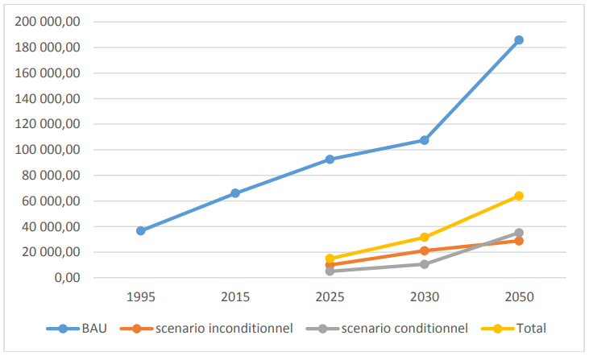
Source : SP/CNDD
Le tableau 2 montre que le Burkina Faso s’engage à réduire de 16,25% en 2025 et à l’horizon 2030, de 29,42%. Le pays s’inscrit ainsi dans une augmentation de ses ambitions par rapport à celle de la première CDN qui était de 18,2% à l’horizon 2030. Toujours par rapport aux ambitions de réduction, le Burkina Faso s’engage à réduire à l’horizon 2050, 34,43% des émissions de GES.
Le potentiel de réduction des émissions de GES dans ce secteur est présenté dans le tableau 3.
|
Scénario (Gg CO2eq) |
2025 |
2030 |
2050 |
|
Scénario inconditionnel |
7527,3 |
15054,6 |
13166,8 |
|
Scénario conditionnel |
2569,5 |
5139 |
17986,4 |
|
Total |
10096,8 |
20193,6 |
31153,2 |
Source : SP/CNDD
L’estimation du potentiel de réduction du secteur AFAT donne 10 096,8 Gg CO2eq dont 7 527,3 Gg CO2eq pour les actions du scénario inconditionnel et 2 569,5 Gg CO2eq en scénario conditionnel à l’horizon 2025.
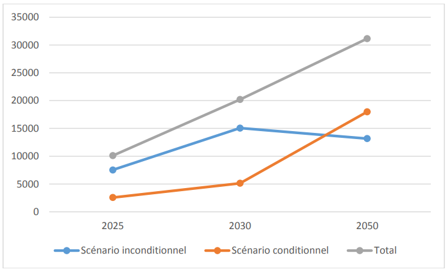
La mise en œuvre des actions d’atténuation du scénario inconditionnel du secteur AFAT permettra une réduction de 8,13% à l’horizon 2025 par rapport au scénario tendanciel et les actions du scénario conditionnel une réduction de 2,77% des émissions totales nationales de GES en 2025. Les deux scénarii mis ensemble contribueront à une réduction substantielle de 10,91% des émissions nationales de GES à ce même horizon (2025). Si on se projette à l’horizon 2050, la mise en œuvre des projets induira une réduction pour les deux scénarii de 16,76% des émissions globales de GES.
Source : SP/CNDD
Le secteur AFAT est le plus important secteur en termes de potentiel de séquestration des GES au Burkina Faso. Les actions de reforestation, de préservation des ressources naturelles sont de ce fait celles qui pourront permettre d’augmenter les ambitions du pays.
Les résultats en termes de séquestration des émissions de GES dans le secteur de l’énergie sont présentés dans le tableau 4.
|
Scénario (Gg CO2eq) |
2025 |
2030 |
2050 |
|
Scénario inconditionnel |
1228,66 |
2457,34 |
7371,98 |
|
Scénario conditionnel |
1964,05 |
3928,11 |
11784,31 |
|
Total |
3192,71 |
6385,45 |
19156,29 |
Source : SP/CNDD
Le potentiel de réduction du secteur de l’énergie est estimé à 3 192,712 Gg CO2eq à l’horizon 2025 pour un potentiel de 1 228,661 Gg CO2eq des actions du scenario inconditionnel et 1 964,051 Gg CO2eq des actions du scenario conditionnel. La figure 8 présente l’évolution des différents scénarii du secteur de l’énergie.
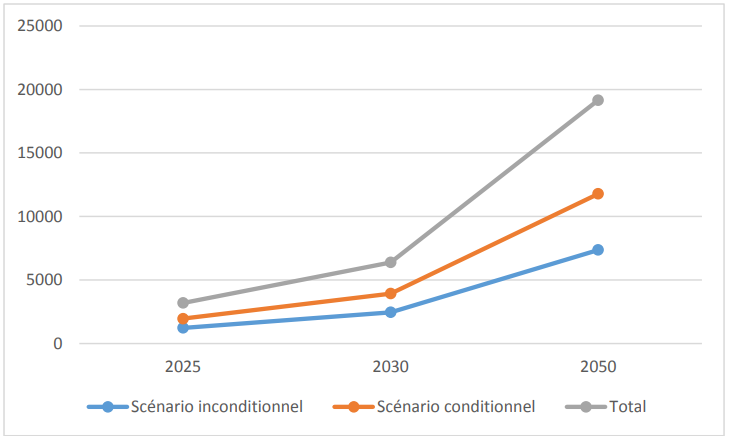
Source : SP/CNDD
Pour le secteur du transport, le potentiel de séquestration des émissions de GES est présenté ci-dessous dans le tableau 5.
|
Scénario (Gg CO2eq) |
2025 |
2030 |
2050 |
|
Scénario inconditionnel |
1210 |
3563 |
8265 |
|
Scénario conditionnel |
267 |
876 |
4153 |
|
Total |
1477 |
4439 |
12418 |
Source : SP/CNDD
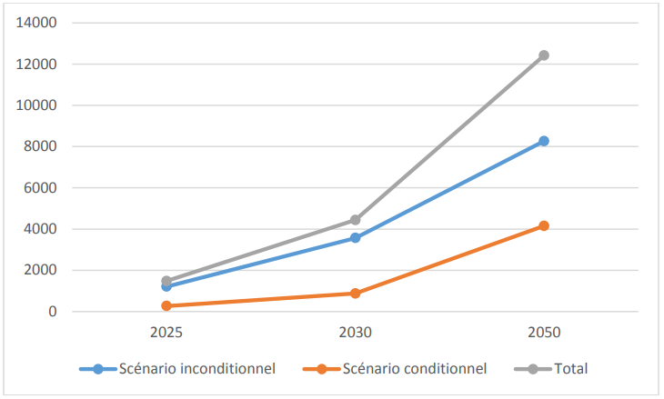
Dans le secteur du transport les actions inconditionnelles et les actions dont leur mise en œuvre nécessite une recherche de financement (conditionnel), ont des potentiels de réduction des émissions de GES respectivement évalués à 1 210 Gg CO2eq et 267Gg CO2eq en 2025. Le total du potentiel de séquestration des émissions de CO2 dans le secteur est de 1 477 Gg CO2eq en 2025. L’évolution des différents scenarii est représentée dans la figure ci-dessous.
Source : SP/CNDD
Le secteur des déchets contribue à la réduction des émissions de GES à travers certaines actions. Le tableau 6 présente les quantités de GES séquestrées dans les scenarios inconditionnels et conditionnels.
|
Scénario (Gg CO2eq) |
2025 |
2030 |
2050 |
|
Scénario inconditionnel |
0,00 |
0,00 |
0,00 |
|
Scénario conditionnel |
262,00 |
614,80 |
1246,95 |
|
Total |
262,00 |
614,80 |
1246,95 |
Source : SP/CNDD
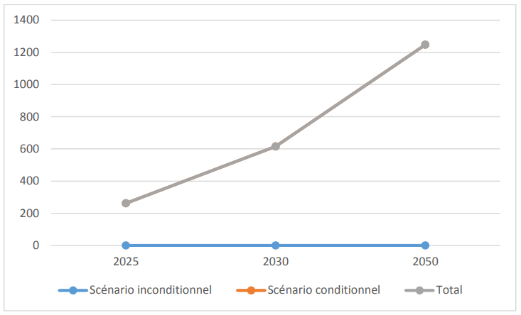
Le potentiel de GES pouvant être séquestré est estimé à 262 Gg CO2eq en 2025 ; 614,80 Gg CO2eq en 2030 et 1 246,9 Gg CO2eq en 2050. Les résultats sont illustrés dans la figure 10 ci-dessous.
Source : SP/CNDD
Le Burkina Faso, conscient de sa vulnérabilité aux changements climatiques, a développé une culture de résilience dans plusieurs secteurs d’activités. Ces actions, tout en renforçant la résilience climatique des populations, contribuent également à la réduction des émissions des GES. La contribution des actions d’adaptation retenues au potentiel de réduction des émissions de GES tant en conditionnel qu’en inconditionnel est présentée dans le tableau ci- dessous.
|
Scenarios |
Réduction des GES par rapport au BAU |
|||||
|
2025 |
2030 |
2050 |
||||
|
Gg CO2eq |
% |
Gg CO2eq |
% |
Gg CO2eq |
% |
|
|
Scénario inconditionnel |
4802,69 |
5,19 |
22230,08 |
20,67 |
33310,44 |
17,93 |
|
Scénario conditionnel |
5525,80 |
5,97 |
10842,62 |
10,08 |
31337,96 |
16,87 |
|
Total |
10328,49 |
11,16 |
33072,70 |
30,76 |
64648,40 |
34,79 |
Source : SP/CNDD
Les résultats du tableau sont représentés conformément au graphique ci-dessous.
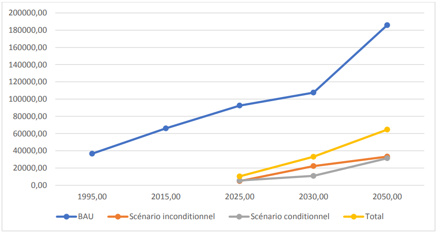
Source : SP/CNDD
Le potentiel de réduction des émissions des actions d’adaptation à l’horizon 2030 est estimé à 33 072,70 Gg CO2eq soit 30,76% de réduction dont 22230,08 Gg CO2eq pour les actions du scenario inconditionnel et 10 842,62 Gg CO2eq pour les actions du scenario conditionnel.
Les stratégies et mesures prioritaires pour la mise en œuvre de la CDN du Burkina Faso trouvent leurs fondements dans les résultats d’analyses des coûts et bénéfices, des avantages socio-économiques des secteurs à potentielle réduction de GES et des secteurs de soutien à l’adaptation.
Les analyses des coûts et bénéfices ont concerné les projets et programmes des secteurs de l’énergie, du transport et de AFAT. L’analyse dans les secteurs de l’énergie et du transport ont permis de mettre en exergue les gains sur le plan économique à court, moyen et long terme.
Pour le secteur de l’énergie, les actions d’atténuation financées permettent à court terme (2025), d’économiser près de 22 millions US$. En incluant les actions du scénario inconditionnel, cette économie dépasse 250 millions US$, soit 24% des dépenses d’investissement (y compris les coûts de gestion) qui seraient mobilisées pour la mise en œuvre de l’ensemble des actions. A moyen terme (2030), les deux scenarii indiquent une économie nettement supérieure à celle obtenue à court terme, soit environ 760 millions US$. A long terme (2050), les économies obtenues couvrent presqu’entièrement 98% de toutes les dépenses nécessaires pour la mise en œuvre et l’entretien de l’ensemble des actions retenues dans ledit secteur.
Pour le secteur du transport, la monétisation des avantages liés à la mise en œuvre des actions de réduction des émissions de GES nécessite d'attribuer un prix à la tonne de GES évitée. Cependant, le Burkina Faso n’a pas encore son propre référentiel sur la fixation du prix de la tonne de CO2. En l’absence de norme nationale, les analyses du pays s’appuient sur le prix de 10 $ US utilisé par le Programme National Biodigesteur (PNB-BF 2020) et Gold standard 2020.
Les projets des secteurs de la foresterie, de l’agriculture et de l’élevage qui se sont exécutés au niveau régional ont fait ressortir les avantages socio-économiques liés à leur mise en œuvre dans la CDN.
Le tableau ci-après récapitule les coûts de mise en œuvre des actions de la CDN.
|
Options |
Secteurs |
Cout de mise en œuvre des actions |
||
|
Scenario inconditionnel |
Scenario conditionnel |
Total |
||
|
Atténuation |
AFAT |
15 468 000 |
21 500 000 |
36 968 000 |
|
Energie |
430 740 149 |
577 198 594 |
1 007 938 743 |
|
|
Transport |
2 910 317 |
120 743 529 |
123 653 846 |
|
|
Déchets |
- |
166 228 399 |
166 228 399 |
|
|
Sous total atténuation |
449 118 465 |
885 670 522 |
1 334 788 987 |
|
|
Adaptation |
Environnement |
230 365 419 |
574 047 048 |
804 412 467 |
|
Agriculture |
735 477 480 |
366 705 424 |
1 102 182 904 |
|
|
Ressources animales |
65 159 352 |
137 025 589 |
202 184 941 |
|
|
Infrastructures |
65 546 760 |
- |
65 546 760 |
|
|
Habitat |
24 000 000 |
286 618 052 |
310 618 052 |
|
|
Transports |
264 000 |
- |
264 000 |
|
|
Eau et assainissement |
26 437 000 |
276 416 751 |
302 853 751 |
|
|
Sous total adaptation |
1 147 250 011 |
1 640 812 864 |
2 788 062 875 |
|
|
Total 1 |
1 596 368 476 |
2 526 483 386 |
4 122 851 862 |
|
|
Genre |
- |
1 379 891 |
1 379 891 |
|
|
Total 2 |
1 379 891 |
1 379 891 |
||
|
Coût de la CDN |
1 596 368 476 |
2 527 863 277 |
4 124 231 753 |
|
Source: SP/CNDD
Les avantages et bénéfices socio-économiques des actions de la CDN du Burkina Faso comprennent, entre autres, une meilleure sécurité en eau (en particulier une meilleure qualité et quantité d'eau pour les populations), l’amélioration de la sécurité alimentaire (notamment grâce à des cultures diversifiées, à une meilleure rétention du carbone organique et de l'eau dans le sol, à une productivité et une résilience améliorée), la réduction des risques de catastrophe et des emplois et moyens de subsistance plus naturels. L’exhaustivité des avantages socio-économiques dans la mise en œuvre des différents secteurs de la CDN est annexée au document (annexe 4).
Plusieurs actions ont été identifiées dans les secteurs dits de soutien (santé, recherche, genre, infrastructures). Ces actions, bien que ne contribuant pas directement à la réduction des émissions de GES, participent fortement au développement socio-économique des populations et améliorent leur résilience.
Les grandes actions engagées par le gouvernement en termes de réformes du système de santé, d’investissements pour l’amélioration du plateau technique médical, de renforcement des capacités du personnel soignant et de construction d’infrastructures sanitaires, sont autant d’efforts consentis mais ne peuvent être évalués en potentiel de séquestration de carbone.
Pour le secteur des infrastructures, quoique participant à l’amélioration des conditions de vie des populations, il n’a pas fait l’objet d’une évaluation pour mettre en exergue son potentiel de réduction des émissions de gaz à effet de serre au titre de la CDN.
Pour la prise en compte du genre et de l’inclusion sociale, la CDN s’est inscrite dans cette dynamique qui va certainement favoriser l’atteinte des objectifs des engagements du pays. L’inclusion sociale et la prise en compte du genre doivent guider la mise en œuvre des actions contenues dans la CDN et favoriser ainsi la réduction des GES.
Enfin, la recherche en tant que secteur contribuant énormément à l’innovation scientifique et technologique, participe à trouver des solutions de résilience aux effets des changements climatiques. Dans le cadre de la CDN, le potentiel d’atténuation des actions du secteur n’a pas été évalué.
Sous la supervision du SP/CNDD, le suivi et l’évaluation de la CDN seront assurés par une unité de coordination de concert avec les acteurs sectoriels.
A cet effet, un plan de renforcement de capacités à l’attention des secteurs concernés par la
«Mesure, Rapportage, Vérification (MRV)» sera établi dans la stratégie de mise en œuvre de la CDN avec les coûts correspondants.
Des indicateurs de suivi de la mise en œuvre ont été formulés pour les actions retenues dans les différents secteurs de la CDN (Habitat, Environnement, Agriculture, Infrastructures, Eau
et assainissement, Transport, Énergie et Élevage). Le répertoire de ces indicateurs se trouve à l’annexe 5 du document.
Le Ministère de l’Environnement, de l’Économie Verte et du Changement Climatique (MEEVCC) assurera le leadership à travers la mise en place d’une Unité de Coordination qui travaillera en étroite collaboration avec les points focaux désignés au niveau des autres départements ministériels. Il s’agit du : (i) ministère en charge de l’agriculture ; (ii) ministère en charge de l’eau ; (iii) ministère en charge des ressources animales ; (iv) ministère en charge de l’habitat et de l’urbanisme ; (v) ministère en charge des infrastructures ; (vi) ministère en charge de la santé ; (vii) ministère en charge de l’énergie et (viii) ministère en charge des transports ;
En outre, l’Unité de Coordination travaillera en synergie avec les collectivités territoriales, les ONG, le secteur privé et avec les ministères à vocation transversale notamment le ministère en charge de la recherche scientifique et de l’innovation, le ministère en charge de la femme et du genre, le ministère en charge des affaires étrangères et le ministère en charge des finances pour les nécessités des accords de financement. Ainsi, devra-t-elle disposer d’un manuel de procédures administratives et d’un système harmonisé de suivi-évaluation des projets, détaillant les principales responsabilités et les objectifs assignés.
L’appui des partenaires techniques et financiers demeure fondamental pour une mise en œuvre effective des projets et programmes conditionnels.
Le suivi des indicateurs sera assuré par le SP/CNDD en collaboration avec les points focaux de la CDN, identifiés au sein des Directions Générales des Études et des Statistiques Sectorielles (DGESS) des départements ministériels.
De façon opérationnelle, les indicateurs retenus seront renseignés grâce aux concours des points focaux et capitalisés par une Unité de Coordination mise en place à cet effet. L’Unité de Coordination est présidée et animée par le SP/CNDD. Des protocoles de collaboration en vue du partage des données seront élaborés et signés par les acteurs sectoriels pour faciliter la collecte des données.
L’Unité de Coordination devrait comprendre au moins trois organes techniques dont :
un organe technique « adaptation » qui s’occupera de la capitalisation des données issues des unités de gestion des projets d’adaptation de la CDN ;
un organe technique « atténuation » qui fera la capitalisation des données issues des unités de gestion des projets d’atténuation de la CDN ;
un organe de soutien qui se chargera du développement du partenariat pour la mise en œuvre et le suivi des projets.
Les départements ministériels sectoriels travailleront à capitaliser les informations collectées par les collectivités territoriales, les ONG et les OSC selon leur domaine d’intervention.
Selon les dispositions de l’Accord de Paris sur le climat, la CDN est révisée suivant un cycle quinquennal. Par conséquent, elle fera l’objet d’une évaluation à sa révision. Toutefois, elle pourrait faire l’objet d’une évaluation intermédiaire.
Le suivi du progrès des actions d’atténuation et d’adaptation de la CDN est axé sur la mise en œuvre d’un système MRV dans les secteurs de l’agriculture, des forêts, des autres formes d’utilisation des terres, des déchets, de l’énergie et des procédés industriels.
Le Ministère en charge de l’environnement coordonnera un comité Ad hoc constitué de toutes les structures compétentes pour la mise en place d’un système MRV performant. Il sera, entre autres, question de suivre: (i) l’augmentation des énergies renouvelables dans le mix de production d'électricité du réseau national; (ii) l’amélioration de l'efficacité énergétique et des ressources dans les différents secteurs; (iii) la progression du couvert végétal; (iv) la promotion des technologies énergétiques propres, efficaces et durables pour réduire la dépendance excessive à l'égard des combustibles fossiles et de la biomasse non durable; (v) l’adoption de systèmes de transport efficaces et à faible émission de dioxyde de carbone; l’adoption d’une agriculture intelligente sur le plan climatique et la gestion efficace du bétail ; et (vi) la progression de systèmes de gestion durable des déchets.
Les données seront collectées en tenant compte, au mieux de la dimension genre à travers une désagrégation par sexe et par âge.
Pour mettre pleinement en œuvre les actions de la CDN, le Burkina Faso aura besoin de subventions et d'autres financements conventionnels multilatéraux et bilatéraux, d'un appui en renforcement des capacités techniques et opérationnelles, ainsi que de transfert de technologies.
Des partenaires techniques et financiers seront sollicités pour appuyer la mise en œuvre du plan d’investissement de la CDN et de la stratégie de communication. Dans un contexte économique difficile aggravé par la pandémie de la COVID-19, le Burkina Faso adoptera une approche globale, holistique et multisectorielle de développement à faibles émissions de carbone, résiliente au changement climatique et prenant en compte le genre.
L’évaluation des besoins en financement des actions d’atténuation et d’adaptation aux effets du changement climatique prévues dans la présente CDN est basée sur les programmes et projets identifiés dans les secteurs clés.
Pour atteindre l’objectif de 29,42%, un montant de 449 118 465,3 US$ est prévu au titre du scenario inconditionnel contre 885 670 522 US$ attendus pour le scenario conditionnel soit un montant total de 1 334 788 987 US$.
Aussi, le pays a pris l’option de renforcer son adaptation et sa résilience par la mise en œuvre d’actions dont le potentiel de réduction des émissions de GES est estimé à 33 072,72 Gg CO2eq soit 30,76% par rapport au scenario Business As Usual. Ce potentiel est réparti en scenario inconditionnel (20,67%) et en scenario conditionnel (10,08%). La mise en œuvre des actions du scenario inconditionnel est d’un montant de 1 147 250 011 US$ contre 1 640 812 864 $US pour le scenario conditionnel soit un montant total de 2 788 062 875 US$.
Les besoins en financement pour la réduction des émissions de GES (atténuation et adaptation) s’élèvent à 4 122 851 862 US. En lien avec le genre qui est transversal, les besoins spécifiques en financement des initiatives de réduction des GES s’élèvent à 1 379 891
$US. En somme, les besoins financiers de la CDN se chiffrent à 4 124 231 753 US.
Le renforcement des capacités vise à outiller les différents acteurs concernés par la mise en œuvre de la CDN dans le domaine du système MRV, des mécanismes de mobilisation des ressources et sur le contenu de la CDN d’une manière générale.
La stratégie consistera essentiellement à:
des actions d’information, de sensibilisation, d’éducation, de formation pour comprendre la problématique du changement climatique, apporter des réponses en matière d’adaptation et d’atténuation ou obtenir des moyens de mise en œuvre (finance climat, technologies propres et/ou adaptatives, etc) ;
des analyses ou études pour déterminer le potentiel des actions et les besoins de mise en œuvre pour élaborer des mesures d’atténuation et/ou d’adaptation ;
un soutien pour l’élaboration et la soumission de documents requis par le cadre de transparence au niveau international. Ces documents sont, entre autres, les inventaires des GES, les Communications Nationales, les Rapports Biennaux Actualisés, les Rapports d’évaluation des besoins en technologies, les Stratégies bas carbone à long terme, les Plans Nationaux d’Adaptation ;
un appui à l’élaboration de politiques publiques en matière d’atténuation et d’adaptation et pour l’élaboration des textes législatifs et/ou réglementaires au titre des mesures internes de mise en œuvre ;
un soutien à la participation aux négociations internationales sur le climat ;
une promotion à la mise au point et le transfert de technologies écologiquement rationnelles (faiblement ou non carbonées et/ou soutenant la résilience) pour permettre au Burkina Faso de contribuer à la riposte mondiale aux changements climatiques.
La mobilisation des ressources est très capitale pour une mise en œuvre effective et efficiente des projets prioritaires retenus dans le cadre de la CDN.
Les sources de financement de la mise en œuvre de la CDN seront à rechercher tant au niveau national qu’international. Ainsi, les sources de financement ci-après seront explorées :
les ressources de l’État : le financement de la CDN devrait prioritairement provenir du budget de l’État où une ligne budgétaire devrait y être créée. Les référentiels de développement dans leur élaboration doivent prévoir un budget conséquent pour intégrer des actions de la CDN. Les collectivités territoriales (Communes et Régions) pourraient également contribuer à la mise en œuvre de la CDN en veillant non seulement à l’intégration de leurs actions dans la planification des Plans Communaux de Développement (PCD) et des Plans Régionaux de Développement (PRD), mais aussi en prévoyant des ressources pour leur mise en œuvre.
les partenaires bilatéraux : des financements provenant de la coopération bilatérale peuvent être mobilisés pour soutenir la mise en œuvre de la CDN. L’excellence des relations entre le Burkina Faso et les pays qui font du financement de l’action climatique leur priorité peut être mise à profit pour l’exécution des actions de la CDN.
Les partenaires multilatéraux : les institutions multilatérales et les fonds multilatéraux créés sous et en dehors de la Convention-cadre des Nations Unies sur les changements climatiques (CCNUCC) peuvent être mobilisés afin d’appuyer le financement de la mise en œuvre de la CDN.
le secteur privé et les Organisations Non Gouvernementales : le secteur privé sera mis à contribution dans la mobilisation des ressources en faveur de la CDN notamment à travers le Partenariat Public Privé (PPP). Ce partenariat a permis la réalisation de certains projets dans le secteur des énergies renouvelables. Les Organisations Non Gouvernementales (ONG) constituent également des partenaires clés dans le dispositif de lutte contre les changements climatiques et constituent de ce fait une source de mobilisation des ressources financières ou technologiques pour la mise en œuvre de la CDN.
Une stratégie de communication sur la CDN sera élaborée et mise en œuvre, en vue de renforcer sa visibilité et son appropriation par tous les acteurs aussi bien au niveau national que local. Elle accordera une place primordiale à la communication de masse notamment, par l'utilisation des langues nationales et au choix des Technologies de l’Information et de la Communication (TIC) adaptées.
Par ailleurs, pour une mobilisation plus accrue des financements en appui à la mise en œuvre de la CDN, l’État burkinabè initiera des communications, des séminaires gouvernementaux et parlementaires et des tables rondes sur sa CDN auprès des différents acteurs et présentera les
opportunités qu’elle offre en lien avec la lutte contre le changement climatique, le développement durable et la réduction des inégalités du genre et de l’inclusion sociale.
De même, pour une bonne couverture des actions et des initiatives de la CDN, il serait nécessaire de former les hommes et les femmes de médias et de les y impliquer.
Ce nouvel engagement du Burkina Faso pour contribuer à l’atteinte de l’objectif de l’Accord de Paris s’inscrit dans un contexte particulier qui pourrait compromettre ses ambitions de réduction. En effet, le contexte d’insécurité vécu dans certaines localités du Burkina Faso depuis le début de l’année 2016 pourrait augmenter la vulnérabilité du pays et impacter négativement la mise en œuvre des actions planifiées dans la CDN révisée. En fonction des actions en cause, des approches participatives avec les parties prenantes permettront d’identifier des options alternatives adaptées aux circonstances.
En outre, la pandémie de la COVID-19 qui touche le monde entier entrave l’investissement par les partenaires techniques et financiers et le secteur privé dans l’ensemble des actions prioritaires pour la mise en œuvre de la CDN. Cette situation pourrait impacter les opportunités d’investissements disponibles pour soutenir l’objectif conditionnel de la CDN. La promotion d’une mobilisation des ressources internes pour la mise en œuvre des actions de la CDN sera privilégiée.
Enfin, l’instabilité politique ou institutionnelle pourrait jouer sur l’atteinte des objectifs de la CDN. Les actions de sensibilisation seront menées à l’endroit des nouvelles autorités.
|
Secteur |
Scénario |
Action/Projet |
Coût(USD) |
Potentiel(GgCO2eq) |
||
|
2025 |
2030 |
2050 |
||||
|
AFAT |
Inconditionnel |
Projet d’appui aux populations dépendantes de la forêt PAPF/DGM |
4 500 000 |
3200,50 |
6401,00 |
12802,00 |
|
Projet d’appui au développement de l’anacarde dans le bassin de la Comoé pour la REDD+ (PADA/REDD+) |
10 968 000 |
4326,80 |
8653,60 |
364,80 |
||
|
Conditionnel |
Forêts, agroforesterie et mise en place de jardins nutritif pour une diversification climato-intelligente |
5 700 000 |
1757,30 |
3514,50 |
12300,80 |
|
|
Réalisation de 100000 hectares de Régénération Naturelle Assistée dans 25 communes du Burkina Faso |
15 800 000 |
812,20 |
1624,50 |
5685,60 |
||
|
Energie |
Inconditionnel |
Acquisition et installation de 15 000 lampadaires à diodes électroluminescentes (LED) en remplacement des lampadaires haute pression de sodium et de mercure au profit de l’éclairage public |
10 100 000 |
50,21 |
100,43 |
301,29 |
|
Construction des centrales solaires à Koudougou (20 MWc) et Kaya (10 MWc) d’une capacité de 30 MWc, y compris le renforcement du réseau 220 km (Yeleen) |
73 952 490 |
231,79 |
463,58 |
1390,74 |
||
|
Construction de la centrale solaire photovoltaïque à Essakane d'une puissance de 15 MWc |
30 000 000 |
115,89 |
231,79 |
695,37 |
||
|
Construction de la centrale solaire photovoltaïque à Matourkou d'une puissance de 14 MWc avec 6 MWh de stockage (KFW) |
28 864 000 |
108,17 |
216,34 |
649,01 |
||
|
Projet d'extension de la centrale Solaire photovoltaïque de Zagtouli (17MWc) |
46 000 000 |
131,35 |
262,69 |
788,08 |
||
|
Projet d’acquisition et d’installation d’équipements solaires dans les bâtiments publics. |
9 999 941 |
15,20 |
30,41 |
91,22 |
||
|
Construction de la centrale solaire photovoltaïque à Dori (Yeleen) d’une puissance de 6,29 MWc (Yeleen). |
21 306 000 |
48,60 |
97,20 |
291,59 |
||
|
Construction de la centrale solaire photovoltaïque à Diapaga d’une puissance de 2,2 MWc (Yeleen). |
7 452 000 |
17,00 |
34,00 |
101,99 |
||
|
Construction de la centrale solaire photovoltaïque à Gaoua d’une puissance de 1,13 MWc (Yeleen). |
3 828 000 |
8,73 |
17,46 |
52,38 |
||
|
Projet d’énergie solaire pour des CSPS hors réseaux. |
670 000 |
1,08 |
2,16 |
6,48 |
||
|
Projet d’électrification par système solaire des infrastructures sociocommunautaires dans 300 localités rurales. |
14 292 231 |
18,09 |
36,19 |
108,56 |
||
|
Projet d’acquisition et d’installation des climatiseurs efficaces en remplacement des mono blocs dans les bâtiments publics. |
370 000 |
0,40 |
0,80 |
2,41 |
||
|
Projet backup solaire. |
6 709 086 |
9,82 |
19,64 |
58,91 |
||
|
Projet de construction d’une mini-centrales solaires photovoltaïques avec stockage dans les centres médicaux avec antenne chirurgicale (CMA). |
7 226 448 |
9,97 |
19,93 |
59,80 |
||
|
Acquisition et installation de 10 500 lampadaires à diodes électroluminescentes (LED) en remplacement des lampadaires haute pression de sodium et de mercure au profit de l’éclairage publique. |
7 548 952 |
35,15 |
70,30 |
210,90 |
||
|
Acquisition et installation de 3 000 lampadaires à diodes électroluminescentes (LED) en remplacement des lampadaires haute pression de sodium et de mercure au profit de l’éclairage public dans les rues de Ouagadougou (PASEL). |
1 960 000 |
10,04 |
20,09 |
60,26 |
||
|
Acquisition et installation de 1 500 lampadaires à diodes électroluminescente (LED) en remplacement des lampadaires haute pression de sodium et de mercure au profit de l’éclairage publique dans les rues de Bobo Dioulasso (PASEL). |
1 160 000 |
5,02 |
10,04 |
30,13 |
||
|
Acquisition et installation de 1 500 000 lampes à diodes électroluminescentes (LED) en remplacement des lampes à tubes fluorescentes dans les ménages. |
13 651 000 |
79,91 |
159,82 |
479,47 |
||
|
Construction de la centrale solaire photovoltaïque à Ouagadougou d’une puissance de 43 MWc (Ouaga Nord Ouest) (Yeleen). |
145 650 000 |
332,23 |
664,46 |
1993,39 |
||
|
Conditionnel |
Projet de construction d’une centrale solaire de Dédougou (18 MWc). |
36 000 000 |
139,07 |
278,15 |
834,44 |
|
|
Projet de construction de 3 centrales solaires photovoltaïques à vocation régionale d’une puissance cumulée de 300 MWc dont 150 MWc dans une première phase (Kaya 1 et Koupéla 2). |
300 000 000 |
1158,95 |
2317,90 |
6953,69 |
||
|
Projet de déploiement de cinquante mille (50 000) kits solaires de type Solar Home System 2 (SHS2) (60 Wc)au profit des ménages au Burkina Faso. |
31 199 |
2,32 |
4,64 |
13,91 |
||
|
Projet de construction d’une centrale thermique à biomasse- déchets de 10 MW à Ouagadougou. |
30 000 000 |
14,70 |
29,40 |
88,20 |
||
|
Projet de construction d’une centrale solaire à Pâ (30 MWc). |
60 000 000 |
231,79 |
463,58 |
1390,74 |
||
|
Projet de construction d’une centrale solaire à Kalzi (30 MWc). |
72 000 000 |
231,79 |
463,58 |
1390,74 |
||
|
Construire une centrale solaire à Zano (24 MWc). |
48 000 000 |
185,43 |
370,86 |
1112,59 |
||
|
Transport |
Inconditionnel |
Projet d'appui à la modernisation du secteur des transports (PAMOSET-FC) composante " Mise en place d'un système de renouvellement pérenne du parc". |
140 000 |
486,00 |
1727,00 |
1727,00 |
|
Projet de mobilité urbaine du Grand Ouagadougou. |
103 845 |
701,00 |
1695,00 |
5790,00 |
||
|
Projet de réalisation de l’interconnexion ferroviaire Accra- Ouagadougou. |
2 666 472 |
23,00 |
141,00 |
748,00 |
||
|
Conditionnel |
Projet de réhabilitation de la ligne ferroviaire Frontière Côte d’Ivoire-Ouaga-Kaya. |
268 508 |
25,00 |
230,00 |
1834,00 |
|
|
Projet de transport urbain de Bobo-Dioulasso. |
120 000 000 |
231,00 |
559,00 |
1911,00 |
||
|
Projet de construction du chemin de fer Kaya-Frontière Niger. |
402 460 |
7,00 |
59,00 |
223,00 |
||
|
Projet de mise en place d’une desserte ferroviaire urbaine et périurbaine lourde de la ville d’Ouagadougou à partir de la ligne existante. |
72 561 |
4,00 |
28,00 |
185,00 |
||
|
Déchets |
Conditionnel |
Projet de récupération du méthane à partir du traitement des eaux usées de la STEP de Kossodo. |
72 784 000 |
|||
|
Projet de récupération du méthane issu de l'enfouissement des déchets du CTVD. |
8 444 000 |
|||||
|
Projet de valorisation de 200 000 m3 de boue de vidange en biogaz. |
15 000 000 |
|||||
|
Projet de construction et d’extension des stations de traitement des eaux usées. |
36 956 921 |
|||||
|
Projet de construction et d’extension des stations de traitement des boues de vidange. |
33 043 478 |
|||||
|
Secteur |
Scénario |
Action/Projet |
Coût (USD) |
Potentiel (GgCO2éq) |
||
|
2025 |
2030 |
2050 |
||||
|
Environnement |
Inconditionnel |
Intégration des mesures d'adaptation au changement climatique dans la gestion concertée du complexe transfrontalier du W- Arly-Pendjari (ADAPT WAP). |
2 590 350 |
|||
|
Préservation et lutte contre la dégradation de la colline sacrée de Boulgou et sa périphérie. |
50 000 |
|||||
|
Projet d’appui à la restauration des écosystèmes dans le terroir de la brousse de Lergho par la mise en défens dans la commune de Garango. |
55 877 |
|||||
|
Amélioration des moyens d’existence durables en milieu rural » dans les régions de la Boucle du Mouhoun et du Centre Ouest, au Burkina Faso. |
5 481 000 |
|||||
|
Projet de gestion des paysages communaux pour la REDD+ |
100 000 000 |
3500 |
19500 |
25000 |
||
|
Beog Puuto |
24 928 000 |
|||||
|
Weoog Paani |
19 680 000 |
|||||
|
projet UE/Wakanda d'appui multisectoriel à 20 villages. |
6 500 000 |
|||||
|
OSRO/BKF/801/SWE. |
23 400 000 |
|||||
|
Appui à la création d’un système MRV national au Burkina Faso. |
2 080 000 |
|||||
|
Projet “Climate Resilience in the Nakambé Basin (RECLIM)” |
225 000 |
|||||
|
Projet de promotion d'une assurance climatique indicielle pour les petits exploitants agricoles au Burkina Faso. |
29 462 792 |
|||||
|
Produits Forestiers Non Ligneux, phase 3. |
10 000 000 |
|||||
|
Appui à la gestion durable des ressources forestières (AGREF)/ BKF/023. |
5 912 400 |
|||||
|
Conditionnel |
||||||
|
Restauration des écosystèmes pour la résilience aux changements climatiques des communautés locales dans la zone d’intervention de la Grande Muraille Verte au Burkina Faso. |
85 000 000 |
576,9 |
1153,9 |
3000 |
||
|
Gestion durable des terres et renforcement de la résilience des communautés du bassin versant du barrage de Toessin. |
56 697 248 |
6,7 |
13,4 |
32 |
||
|
Gestion intégrée des sols pour la productivité agricole et la restauration de l'environnement. |
39 649 800 |
282,8 |
565,5 |
1413,8 |
||
|
Mise en place d'un Programme de Réduction des Emissions AFOLU (REDD+ + Agriculture). |
300 000 000 |
|||||
|
Initiative des écovillages pilotes au Burkina Faso. |
70 000 000 |
|||||
|
Gestion durable des espaces de conservation des régions du Centre-Ouest, de la Boucle du Mouhoun, des Cascades, du Sud- Ouest et du Nord. |
22 700 000 |
4014,19 |
8028,39 |
24085,17 |
||
|
Agriculture |
Inconditionnel |
Projet d’amélioration de la productivité agricole par la conservation des eaux et des sols (PACES). |
16 779 380 |
118,5 |
236,9 |
710,7 |
|
Projet d'appui régional a l'initiative pour l'irrigation au sahel- Burkina Faso (PARIIS-BF). |
40 109 850 |
|||||
|
Programme de Coopération Agricole Burkina Faso Chine (PCA/BF-CH). |
58 725 320 |
|||||
|
Projet d’Irrigation localisée et de Résilience Agricole au Burkina Faso (PIRA-BF). |
3 055 000 |
|||||
|
Projet d’aménagement et de valorisation de la plaine de la Léraba (PAVAL). |
63 899 580 |
|||||
|
Projet de conduite des actions de développement agricole dans la zone de Soum (PDA-Soum). |
61 800 000 |
12,8 |
25,7 |
64,2 |
||
|
Projet de gestion participative des ressources naturelles de développement rural du Nord, du Centre-Nord Et de l'Est (NEER TAMBA). |
122 829 550 |
353,7 |
707,5 |
2334,7 |
||
|
Projet d'amélioration et de la sécurisation agricole (SECURAGRI). |
4 800 000 |
131,2 |
262,4 |
656 |
||
|
Projet d'Appui aux Filières Agricoles dans les régions du sud- ouest, des Hauts-Bassins, des Cascades et de la Boucle du Mouhoun (PAFA-4R). |
98 793 600 |
83 |
165,6 |
414,1 |
||
|
Projet de développement agricole de Dangoumana (PDAD). |
19 453 200 |
40,1 |
80,2 |
200,5 |
||
|
Projet de résilience et compétitivité agricoles du Burkina Faso (PReCA). |
245 232 000 |
122,3 |
244,6 |
611,7 |
||
|
Conditionnel |
Projet d’aménagement de 35 000 ha de bas-fonds et périmètres irrigués et leur mise en valeur par le système de riziculture intensive (SRI). |
160 000 000 |
||||
|
Programme de développement intégré de la vallée de Samendeni phase II (PDIS II): aménagements de périmètres irrigues et recalibrage du Mouhoun. |
119 182 000 |
|||||
|
Gestion intégrée des sols pour la productivité agricole et la restauration de l'environnement. |
43 218 280 |
|||||
|
Appui à la gestion durable des terres agricoles dans cinq régions du Burkina Faso (PGDTA-5R). |
44 305 144 |
437,4 |
874,7 |
2186,8 |
||
|
Ressources animales |
Inconditionnel |
Récupération et valorisation des espaces pastoraux (« ReVaP »). |
13 989 540 |
104,7 |
209,41 |
628,23 |
|
Programme de Développement du Pastoralisme Durable du Sahel (PDPDS). |
210 320 |
282,645 |
565,29 |
1695,87 |
||
|
Projet d’Appui à la Mobilité du Bétail pour un meilleur Accès aux Ressources et aux Marchés (PAMOBARMA) en Afrique de l’Ouest. |
959 492 |
9,12 |
18,24 |
54,72 |
||
|
Résilience des eleveurs aux crises (alimentaires et sécuritaires) et aux changements climatiques. |
50 000 000 |
7,62 |
15,24 |
45,72 |
||
|
Conditionnel |
Réhabilition de 225000ha de terres degradées à des fins agro sylvo pastorales. |
71 000 000 |
||||
|
Création et gestion durable de 02 zones d'intensification de production animale(ZIPA) dans 2 regions du pays. |
47 600 000 |
|||||
|
Fauche et conservation de 10000T de fourages grossiers par an (foins et résidus de culture). |
17 830 189 |
|||||
|
Aménagement des points d’eau en vue de préserver les berges de la vallée du Kou. |
595 400 |
0,8 |
1,61 |
4,83 |
||
|
Eau et assainissement |
Inconditionnel |
Programme Intégré de Développement et d’Adaptation au Changement Climatique dans le Bassin du Niger (PIDACC/BN). |
16 037 000 |
|||
|
Projet hygiène et assainissement dans les Régions Nord, Centre- Nord et Centre-Sud au BF 2018-2022. |
10 400 000 |
|||||
|
Conditionnel |
construction d'un barrage hydro-agricole, éléctrique a BASSIERI au Burkina Faso. |
115 000 000 |
52,5 |
105 |
315 |
|
|
Restauration, protection et valorisation du Lac Dem. |
102 000 000 |
|||||
|
Construction d'un barrage hydro-agricole et hydroélectrique de Banwaly. |
59 416 751 |
50,06 |
100,12 |
300,36 |
||
|
Infrastructures |
Inconditionnel |
Projet de travaux d’entretien périodique de la RN06 : Ouagadougou-Pont Nazinon. |
11 585 368 |
|||
|
Projet de construction de l’ouvrage de franchissement de Poa sur la piste reliant Kyon à Poa. |
1 060 168 |
|||||
|
Projet de construction d’ouvrage de franchissement à kayao. |
164 886 |
|||||
|
Projet de travaux d’entretien périodique des routes en terre de l’année 2019: lot 03: Travaux de construction d’ouvrages de franchissement sur la piste Zecco-Toungou et dans la commune de Pô. |
129 844 |
|||||
|
Projet de travaux de construction d’ouvrages et d’aménagement de la déviation de la RD55: Embr. Rn04-absouya. |
2 717 770 |
|||||
|
Projet de travaux du programme d’urgence de réhabilitation et de bitumage de tronçons de routes et d’ouvrages de franchissement / lot 6 : ouvrage sur le barrage de Gutti (Ramsa- Séguenega). |
9 401 166 |
|||||
|
Projet de travaux d’aménagement et de bitumage de voies urbaines à Koudougou (7 km + 2 ouvrages de franchissement). |
6 470 432 |
|||||
|
Projet de travaux de réalisation d’environ 2,5 km de caniveaux pour le drainage des eaux pluviales à Koudougou. |
1 243 746 |
|||||
|
Habitat |
Inconditionnel |
Renforcement le réseau d'assainissement des eaux pluviales de la ville de Ouagadougou phase III : aménagement de l'exutoire à l'intérieur et en aval du parc urbain Bangr weogo. |
24 000 000 |
|||
|
Conditionnel |
Cartographie des zones à risque d'inondations dans les agglomérations de plus de 5000 habitants (50 agglomérations). |
84 211 000 |
||||
|
Valorisation des matériaux locaux et Promotion d'un habitat sans bois ni tôle en adaptation aux changements climatiques dans les zone rurales et semi-urbaines du Burkina Faso. |
197 657 852 |
|||||
|
Programme pilote de promotion de refroidissement efficient dans les logements sociaux. |
666 000 |
40,527 |
||||
|
Restauration et aménagement de la ceinture verte de Ouagadougou. |
2 330 000 |
23,4 |
||||
|
Efficacité énergétique dans l'habitat urbain et rural. |
1 753 200 |
40,527 |
||||
|
Transport |
Inconditionnel |
Projet régional de Corridor économique Lomé-Ouagadougou- Niamey (LON). |
264 000 |
37 |
199 |
894 |
|
SECTEUR |
AVANTAGES SOCIO-ECONOMIQUES |
|
Transport/Infrastructure |
la création d’emplois temporaires et permanents ; |
|
la baisse du nombre d’accidents de la route ; |
|
|
l’économie de temps des voyages au profit des activités économiques ou aux loisirs ; |
|
|
la diminution du nombre de sinistrés des inondations ; |
|
|
l’amélioration du cadre de vie des populations ; |
|
|
la baisse à long terme des coûts des marchandises à travers la baisse occasionnée du coût du transport ; |
|
|
la baisse des émissions de GES dans le secteur des transports à long terme, entraînant une amélioration de la santé des populations (maladies liées à la pollution réduites) ; |
|
|
Déchets |
l’augmentation de l’offre énergétique ; |
|
l’amélioration des conditions de vie des populations ; |
|
|
la réalisation d’économies sur l’importation d’électricité ou de fuel ; |
|
|
l’utilisation des engrais de compostage des boues de vidange ; |
|
|
la gestion durable des fertilisants agricoles ; |
|
|
l’utilisation du compost ; |
|
|
la récupération du méthane pour une réduction considérable des émissions d’un gaz à effet de serre ; |
|
|
Agriculture |
la mise en place de mécanismes d’accès aux intrants agricoles de qualité, au financement et aux appuis conseils ; |
|
l’accroissement de la productivité, des productions et des revenus agricoles sur une base durable pour les exploitants dont les femmes et les jeunes ; |
|
|
la création d’emplois verts ; |
|
|
l’accroissement des revenus pour les femmes bénéficiaires de projets ; |
|
|
l’accroissement de la résilience des populations bénéficiaires face aux changements climatiques ; |
|
|
la réduction des risques de pollution des sources d’eau et de la biodiversité par la non utilisation des herbicides du fait du faible enherbement des sites irrigués par goutte à goutte ; |
|
|
l’aménagement de périmètres irrigués ; |
|
|
l’accroissement des superficies des terres exploitées par l’aménagement des bas-fonds et la récupération des terres dégradées ; |
|
|
Foresterie |
la gestion durable les ressources forestières et contribution des filières forestières au PIB ; |
|
la couverture des besoins énergétiques, par une extension des aménagements forestiers ; |
|
|
la restauration des ressources dégradées et le transfert de compétences aux collectivités territoriales ; |
|
|
le renforcement de la résilience des écosystèmes et l’amélioration des moyens de subsistance des populations en relation avec la question du changement climatique grâce à la mise en place d’un système d’alerte précoce multirisque et à la mise en œuvre de mesures d’adaptation concrètes ; |
|
|
la gestion durable des terres et l’amélioration de la résilience des ménages agro-sylvo-pastoraux aux changements climatiques ; |
|
|
l’amélioration de la résilience des écosystèmes du fleuve Niger et des populations par une gestion durable des ressources naturelles ; |
|
|
la contribution à la gestion durable des espaces de conservation ; |
|
|
la contribution à l’atteindre de la sécurité alimentaire et la préservation des écosystèmes naturels ; |
|
|
la restauration durable du couvert végétal en vue de renforcer la résilience des populations vulnérables et la contribution à la séquestration du carbone ; |
|
|
l’appui au développement des initiatives locales de la gouvernance forestière et environnementale en augmentant la résilience au changement climatique et en préservant les ressources forestières ; |
|
|
Élevage |
l’amélioration de la couverture des besoins alimentaires du bétail ; |
|
l’amélioration du couvert végétal ; |
|
|
l’amélioration des conditions de vie des agro-pasteurs ; |
|
|
l’augmentation des espaces de pâture ; |
|
|
l’augmentation des espaces pastoraux fonctionnels ; |
|
|
l’augmentation des superficies récupérées ; |
|
|
la création d’emplois et de revenus ; |
|
|
la diminution de la concurrence pour les ressources naturelles ; |
|
|
la fixation et protection des berges ; |
|
|
la réduction de la coupe du bois ; |
|
|
la réduction des risques de dégradation des terres et de conflits ; |
|
|
la réduction des risques de santé animale pour les pays de transit/destination ; |
|
|
la sécurisation des activités pastorales ; |
|
SECTEURS |
INDICATEURS DE SUIVI CDN |
CIBLES ODD CONCERNEES |
|
Energie |
Nombre d’équipement installé (lampes efficaces et climatiseurs efficaces), Les puissances installées. |
5.a, 5.b, 5.c et 13.b |
|
Infrastructures |
Taux d’exécution physique/financier (%) ; Proportion/linéaire de voiries aménagées ; Proportion/linéaire de caniveaux aménagées. |
9.1 ; 9.a ; 11.5 ; 13.1 ; 19.b |
|
Agriculture |
Nombre d'hectares de terres dégradées récupérées, Nombre d'hectares de périmètre irrigué aménagés, Nombre d'hectares de bas-fonds aménagés, Superficies irriguées avec des systèmes performants d’irrigation exploitées, Nombre d'hectares de périmètre avec maitrise totale d'eau aménagés. |
1.1 ; 1.2 ; 1.4 ; 1.5 ; 2.1; 2.2; 2.3; 2.4 ; 5.1 ; 6.4; 8.2; 8.4; 10.2; 12.2; 13.1; 13,2; 15,3. |
|
Ressources Animales |
Superficie d’aire balisée, Superficie de terre dégradée récupérée, Superficie totale d’espaces pastoraux fonctionnels, Longueur de piste à bétail balisée, Superficie des espaces pastoraux sécurisée. |
1.a ; 1.4 ; 1.5 ; 2.1 ; 2.3 ; 2.4 ; 6.1 ; 9.1. |
|
Eau, Assainissement et Déchets |
Nombre de centre de collecte et de traitement de boue de vidange construit ; Nombre de stations d'épuration des eaux construit ; Quantité additionnel de CO2 séquestré (tonne) ; Quantité de biogaz produite ; Quantité de boues de vidange valorisée en biogaz ; Quantité de gaz à effet de serre évaluée ; Quantité de méthane récupérée ; Quantité de déchets traités, Quantité de déchets valorisés ; Quantité de déchets évacués. |
5.5 ; 5.c ; 13.2 ; 13.3. |
|
Habitat |
Linéaire de km de caniveaux réalisé ; Nombre d’agglomérations dont les zones à risque sont cartographiées ; Nombre de nouvelles technologies de construction développées dans le domaine du bâtiment ; Proportion des matériaux locaux utilisés. |
1.4 ; 4.3 ; 5.b ; 5.1; 11.3 ; 4.3 ; 9.1;10.3. |
|
Transport |
Taux de réalisation des prévisions météorologiques journalières, Nombre de véhicules usagers retirés de la circulation, Nombre de nouveau bus mis en circulation, Linéaire de voie ferrée construit. |
5. b ; 5.c ; 5.5 ; 13.b; 13.3 ; 11.2 ; 9.1 ; 13.3. |
|
Environnement |
Quantité de gaz à effet de serre émis réduite; Superficie de nouvelles plantations agroforestières mises en place, Superficie des forêts sous aménagement (pour la production du bois); Nombre de plants mis en terre, Superficie de nouvelles plantations agroforestières mises en place, Nombre d'espaces de conservation créés par les collectivités territoriales par an, Superficie sur laquelle la RNA est pratiquée, Nombre de bonnes pratiques mises en œuvre en lien avec l'adaptation. |
1.5 ; 11.6 ; 13.1 ; 15.3 ; 15.4. |